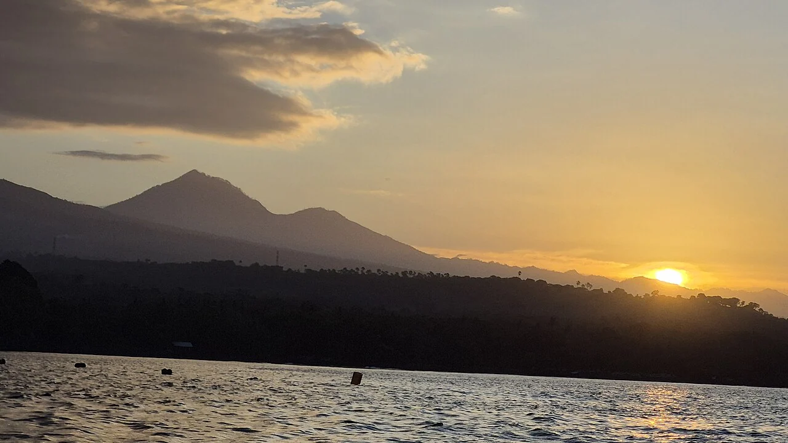

Amed
Bali, Indonésie · snorkeling, plongée

Au nord-est de Bali, Amed désigne un ensemble de villages côtiers, dont Jemeluk et Lipah. Le snorkeling et la plongée se préparent baie par baie avec les centres locaux.
- Lieu
- Bali, Indonésie
- Niveau
- Variable selon les conditions
- Activités
- snorkeling, plongée
- Type d'eau
- Mer / océan
- Coordonnées
- -8.34, 115.65 (position approximative du secteur)
Ouvrir dans Ocean Buddy Télécharger sur l'App Store
Source : Indonesia Travel.